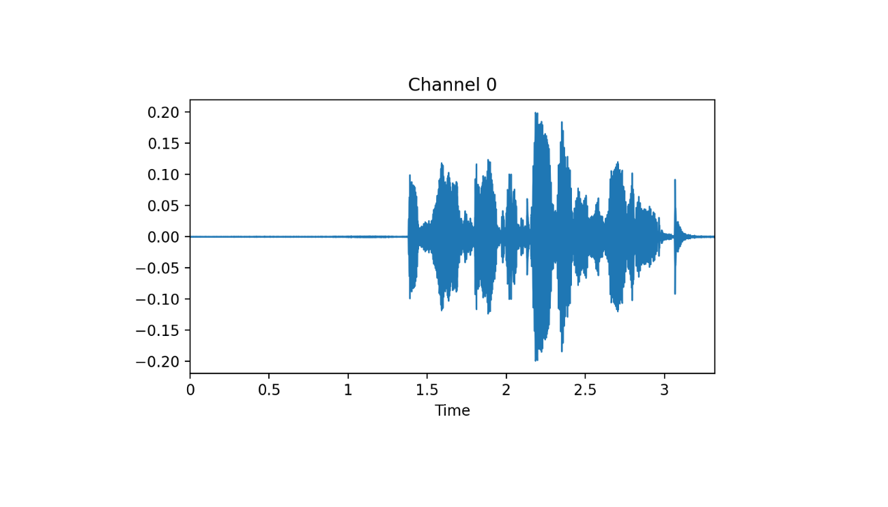

The fastai library simplifies training fast and accurate neural nets using modern best practices. See the fastai website to get started. The library is based on research into deep learning best practices undertaken at fast.ai, and includes “out of the box” support for vision, text, tabular, and collab (collaborative filtering) models.
Grab data:
URLs_SPEAKERS10()
path_dig = 'SPEAKERS10'See audio extensions:
audio_extensions()[1:6]
#[1] ".aif" ".aifc" ".aiff" ".au" ".m3u" ".mp2" Read files:
fnames = get_files(path_dig, extensions = audio_extensions())
# (#3842) [Path('SPEAKERS10/f0004_us_f0004_00414.wav')...]Read audio data and visualize a tensor:
at = AudioTensor_create(fnames[0])
at; at$shape
at %>% show() %>% plot(dpi = 200)
fastaudio has a AudioConfig class which allows us to prepare different settings for our dataset. Currently it has:
Voice module is the most suitable because it contains human voices.
cfg = Voice()
cfg$f_max; cfg$sample_rate
#[1] 8000 # frequency range
#[1] 16000 # the sampling rateTurn data into spectrogram and crop signal:
aud2spec = AudioToSpec_from_cfg(cfg)
crop1s = ResizeSignal(1000)Create a pipeline and see the result:
As usual, prepare a datalaoder:
item_tfms = list(ResizeSignal(1000), aud2spec)
get_y = function(x) substring(x$name[1],1,1)
aud_digit = DataBlock(blocks = list(AudioBlock(), CategoryBlock()),
get_items = get_audio_files,
splitter = RandomSplitter(),
item_tfms = item_tfms,
get_y = get_y)
dls = aud_digit %>% dataloaders(source = path_dig, bs = 64)
dls %>% show_batch(figsize = c(15, 8.5), nrows = 3, ncols = 3, max_n = 9, dpi = 180)We will use a pretrained ResNet model. However, the channel number and weight dimension have to be changed:
torch = torch()
nn = nn()
learn = Learner(dls, xresnet18(pretrained = FALSE), nn$CrossEntropyLoss(), metrics=accuracy)
# channel from 3 to 1
learn$model[0][0][['in_channels']] %f% 1L
# reshape
new_weight_shape <- torch$nn$parameter$Parameter(
(learn$model[0][0]$weight %>% narrow('[:,1,:,:]'))$unsqueeze(1L))
# assign with %f%
learn$model[0][0][['weight']] %f% new_weight_shapeFind lr:
lrs = learn %>% lr_find()
#SuggestedLRs(lr_min=0.03019951581954956, lr_steep=0.0030199517495930195)And fit:
learn %>% fit_one_cycle(10, 1e-3)epoch train_loss valid_loss accuracy time
0 5.494162 3.295561 0.632812 00:06
1 1.962470 0.236809 0.877604 00:06
2 0.801965 0.174774 0.917969 00:06
3 0.391742 0.208425 0.881510 00:06
4 0.243276 0.149436 0.914062 00:06
5 0.174708 0.134832 0.929688 00:07
6 0.142626 0.127814 0.910156 00:06
7 0.131042 0.120308 0.924479 00:07
8 0.121679 0.126913 0.919271 00:06
9 0.118215 0.114659 0.924479 00:06